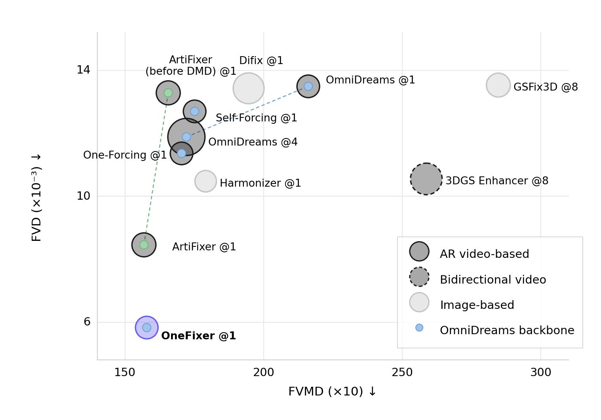
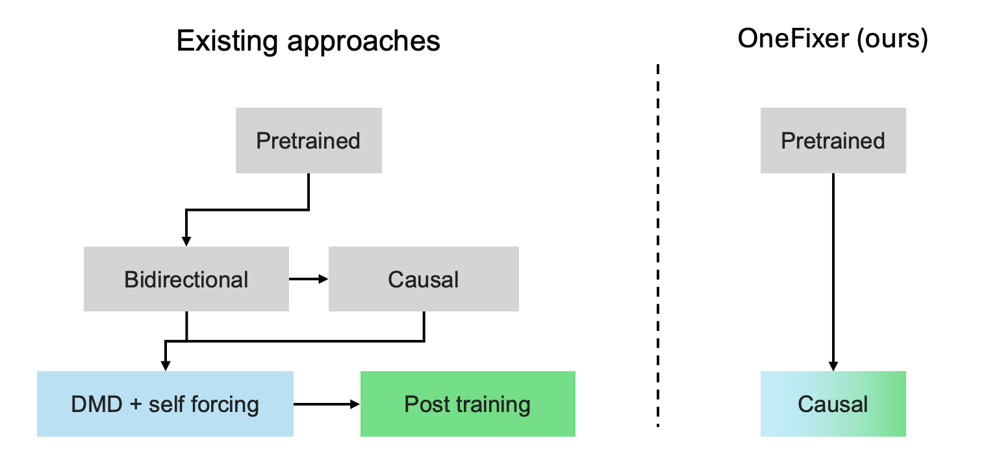
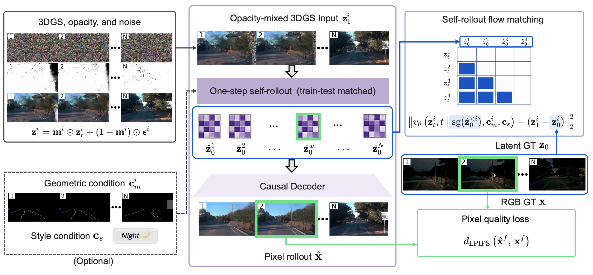
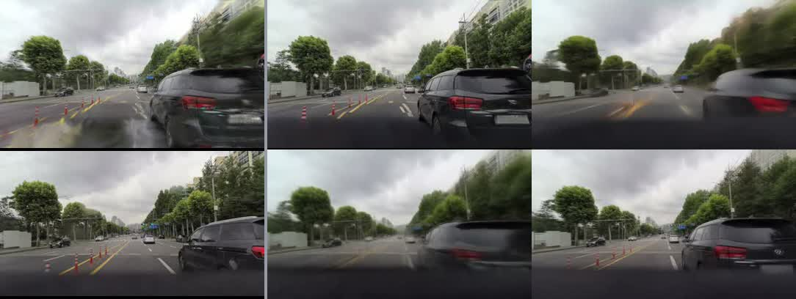
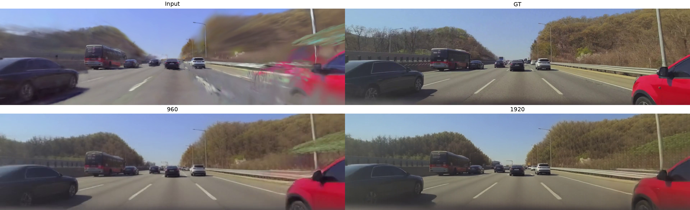

OneFixer: High-Quality and Consistent One-Step Autoregressive 3DGS Refinement for Driving Scenes
All videos use one-step denoising with autoregressive generation over 8-frame chunks.

Motivation
One-step causal refinement makes temporal consistency harder. In autoregressive video diffusion, each refined prediction becomes part of the causal context for subsequent frames. Under one-step denoising, this generated context is reused without iterative correction, making frame-to-frame consistency more sensitive to prediction quality. This challenge is visible in prior autoregressive video models such as OmniDreams: reducing inference from 4 denoising steps to 1 leads to greater frame-to-frame inconsistency and degraded refinement quality.
Existing one-step stabilization pipelines can require complex training procedures. Self-forcing and distribution-matching objectives can improve autoregressive stability, as demonstrated by ArtiFixer, but preserving perceptual quality at a single denoising step remains challenging. Representative approaches additionally rely on multiple training stages, separate bidirectional and causal models, or auxiliary distillation and regularization objectives.
Greater temporal inconsistency ArtiFixer @1
Improved stability, reduced detail OneFixer (Ours) @1
Stable, high-fidelity refinement
300-frame autoregressive rollout for 3DGS refinement. @N denotes the number of denoising steps.
OneFixer at a Glance


Comparison - Waymo (198 frames)
All methods are fine-tuned on the corresponding training split.
Comparison - Seoul (900 frames)
All methods are fine-tuned on the corresponding training split.
Comparison - Novel View (300 frames)
All methods are fine-tuned on the corresponding training split.

Additional Results
Non-driving Scenes
All methods are fine-tuned on the corresponding training split. OneFixer is initialized from OmniDreams, a driving-scene generation video model.
Closed Loop Simulation
Correctly stops before the truck. The black dashed line indicates the logged trajectory; outside this path, no 3DGS reconstruction is available.
Stylization
Multi-Camera Generation
High Resolution
